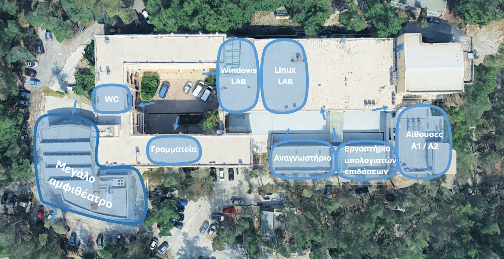
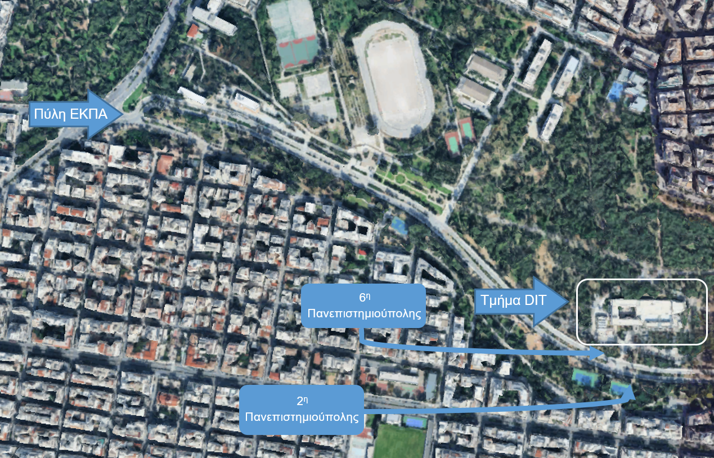
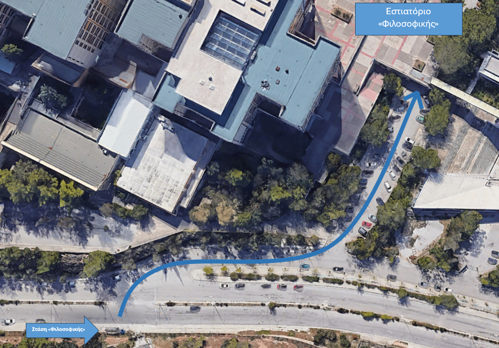

Εισαγωγικό Μήνυμα
Αρχικά, συγχαρητήρια για την επιτυχία σας! Αυτή η επίτευξη αποτελεί την επιβράβευση της αφοσίωσης και της προσπάθειάς σας και σηματοδοτεί την έναρξη ενός νέου και συναρπαστικού κεφαλαίου στη ζωή σας.
Ως παλαιότεροι φοιτητές του τμήματος, δημιουργήσαμε αυτή την ιστοσελίδα με σκοπό να υποστηρίξουμε τα πρώτα σας βήματα στο Τμήμα «Πληροφορικής και Τηλεπικοινωνιών ΕΚΠΑ»
Η ιστοσελίδα περιλαμβάνει χρήσιμες πληροφορίες για διαδικαστικά θέματα καθώς και συμβουλές για την αρχική περίοδο των σπουδών σας. Ανανεώνουμε τακτικά την ιστοσελίδα με βάση τις δικές σας ερωτήσεις και απορίες. Για οποιαδήποτε ερώτηση ή διευκρίνιση, παρακαλούμε να μην διστάσετε να επικοινωνήσετε μαζί μας μέσω της φόρμας που εμφανίζεται παρακάτω:
Οι απορίες σας είναι πολύτιμες για να εμπλουτίσουμε τη βάση δεδομένων μας με τις πιο συχνές ερωτήσεις των φοιτητών!
Σίγουρα, οι επίσημες απαντήσεις στα ερωτήματά σας παρέχονται από τη Γραμματεία του Τμήματος, στα παρακάτω στοιχεία επικοινωνίας:
Ανακοινώσεις, εγγραφές & διαδικαστικά
Ως νέοι φοιτητές, μπορείτε να ενημερώνεστε τακτικά σχετικά με τα διαδικαστικά μέσα από την ιστοσελίδα του τμήματος www.di.uoa.gr και συγκεκριμένα στο τμήμα «Ανακοινώσεις» δηλαδή
Εκεί αναρτώνται και οι πρώτες ενημερώσεις για τους εισαχθέντες. Η γραμματεία επαναλειτουργεί από Δευτέρα 19/8/2024. Δεν υπάρχει κανένας λόγος να αγχώνεστε για τα διαδικαστικά. Κάθε λεπτομέρεια και οδηγία δίνεται από την γραμματεία του πανεπιστημίου. Οι φοιτητές αρχικά ενημερώνεστε για την εγγραφή σας στο πανεπιστήμιο μέσα από τις ανακοινώσεις της ιστοσελίδας όπως είπαμε παραπάνω.
Οι οδηγίες εγγραφής στέλνονται με email οπότε μπορείτε να παραλείψετε πολλά από τα παρακάτω.
Πως κάνω εγγραφή στο πανεπιστήμιο και στις απαραίτητες υπηρεσίες;
Ενδεικτικά κάποια πρώτα βήματά για την εγγραφή σας στο τμήμα φαίνονται παρακάτω. ΜΗΝ κάνετε κάποιο από τα παρακάτω εάν δεν έχετε λάβει την αντίστοιχη ανακοίνωση. Όλα θα γίνουν στην ώρα τους!
- Ηλεκτρονική εγγραφή επιτυχόντων στην Τριτοβάθμια εκπαίδευση 2024 (Ιστοσελίδα υπουργείου) → εδώ
Τι είναι ο αριθμός μητρώου, που χρησιμεύει;
Ο αριθμός μητρώου είναι κάτι που θα το χρησιμοποιείτε παντού, για την σύνδεσή σας στο eclass, σε sites του πανεπιστημίου, στα εργαστήρια, στην εξεταστική κλπ. αλλά με διαφορετική μορφή (ως sdi). Ο κάθε αριθμός είναι μοναδικός για τον καθένα σας.
Πότε θα λάβω τον αριθμό μητρώου και που πρέπει να κάνω εγγραφή;
Όταν εκδοθεί ο αριθμός μητρώου σας, θα σας αποσταλεί με e-mail (σε αυτό που έχετε δηλώσει με την εγγραφή σας). Η έκδοσή του απαιτεί χρόνο οπότε μην αγχώνεστε εάν δεν έχει αποσταλεί ακόμη ή αν αργεί. Η μορφή του αρ. μητρώου είναι η εξής:
Οι οδηγίες στο email αυτό που θα σας έρθει είναι ξεκάθαρες οπότε ακολουθήστε τες για την εγγραφή σας στο WebADM
Τι είναι το sdi;
Η σύνδεσή σας οπουδήποτε (site του ΕΚΠΑ, eclass κλπ) απαιτεί την εισαγωγή του sdi σας, δηλαδή ενός αριθμού που προκύπτει από τον αριθμό μητρώου σας, λειτουργεί σαν username:
Πότε κάνουμε δήλωση μαθημάτων;
Δεν χρειάζεται να γίνει δήλωση των μαθημάτων διότι γίνεται αυτόματα για το 1ο έτος από την γραμματεία (1ο και 2ο εξάμηνο).
Μετά, απαιτείται δική σας δήλωση για να έχετε την δυνατότητα να δώσετε εξεταστική μέσω του My-studies
Μπορείτε να βρείτε και πληροφορίες για την εγγραφή σας στο τμήμα κλπ στο site του τμήματος και συγκεκριμένα εδώ.
Βιβλία και ακαδημαϊκή ταυτότητα
Πότε παίρνουμε βιβλία;
Δυστυχώς, η παραλαβή συγγραμμάτων δεν ταυτίζεται χρονικά με την έναρξη του εξαμήνου και καθυστερεί περίπου έναν μήνα. Οι αιτήσεις για τα βιβλία αρχίζουν με ημερομηνία που ανακοινώνεται στο σύστημα δήλωσης συγγραμμάτων «Έυδοξος» δηλαδή εδώ
Πώς βγάζουμε πάσο – ακαδημαϊκή ταυτότητα, που χρησιμεύει;
Η ακαδημαϊκή ταυτότητα εκδίδεται μέσω του Academic ID
Η παραλαβή της γίνεται από το κατάστημα που έχετε επιλέξει κατά την αίτησή σας παίρνοντας μαζί την ταυτότητά σας και τον αριθμό pin που λαμβάνετε μέσω email.
Διευκρίνηση: Σε ορισμένα καταστήματα τηλεπικοινωνιών, όπου συχνά παραλαμβάνετε την ακαδημαϊκή σας ταυτότητα, προωθούνται κατά την παραλαβή πακέτα και αριθμοί κινητής τηλεφωνίας. Έχετε τη δυνατότητα να αποκτήσετε νέο αριθμό, εάν το επιθυμείτε, ωστόσο, αυτό δεν είναι υποχρεωτικό. Η παραλαβή της ακαδημαϊκής ταυτότητας δεν συνεπάγεται την υποχρέωση αγοράς τηλεπικοινωνιακού πακέτου ή καταβολής οποιουδήποτε χρηματικού ποσού, όπως έχει παρατηρηθεί τα προηγούμενα έτη.
Πρόγραμμα και έναρξη εξαμήνου
Πότε ξεκινάει το 1ο εξάμηνο;
Το πρώτο εξάμηνο ξεκινάει αρχές Οκτώβρη αλλά η ακριβής ημερομηνία αναρτάται στο site του πανεπιστημίου:
Που βλέπω το πρόγραμμα του 1ου εξαμήνου;
Το πρόγραμμα αναρτάται στο site του πανεπιστημίου:
Συνήθως το πρώτο εξάμηνο αναπαρίσταται στο πρόγραμμα με γαλάζιο χρώμα. Παρ’ όλα αυτά αναγράφεται το εξάμηνο π.χ. «Εισαγωγή στον Προγραμματισμό – 1ο – Αυγερινός», το «1ο» δηλώνει το εξάμηνο.
Τι είναι το «Τμήμα Αμmod4 …»;
Ανάλογα την κατάληξη του αριθμού μητρώου σας, χωρίζεστε σε τμήματα για το φροντιστήριο των διακριτών μαθηματικών.
Δηλαδή, αν για παράδειγμα ο αριθμός μητρώου σας τελειώνει σε 9 τότε:
Αυτό σημαίνει ότι προαιρετικά θα παρευρίσκεστε στο τμήμα μόνο που αντιστοιχεί στο αποτέλεσμα της πράξης αυτής
🗯️ Τι είναι το «mod»;
Εάν δεν είστε από κατεύθυνση «Οικονομικών & Πληροφορικής» ίσως να μην έχετε ξαναδεί το mod οπότε ήρθε η ώρα!
Το mod, λοιπόν, βρίσκει το (ακέραιο) υπόλοιπο του a διαιρούμενο με το b και προέρχεται από το modulo
π.χ.
9 mod 4 = 1
8 mod 1 = 0
15 mod 2 = 1
To div θα το μάθετε άλλη στιγμή…
Ποια η διαφορά φροντιστηρίου και διάλεξης;
Στις διαλέξεις παραδίδεται η θεωρία του μαθήματος ενώ στο φροντιστήριο γίνονται ασκήσεις πάνω στην θεωρία της διάλεξης.
Είναι όλα τα μαθήματα υποχρεωτικά;
Όχι, δεν είναι όλα τα μαθήματα υποχρεωτικά.
Υποχρεωτικά: Εισαγωγή στον Προγραμματισμό, Διακριτά Μαθηματικά, Γραμμική Άλγεβρα, Λογική Σχεδίαση, Εισαγωγή στην Πληροφορική και στις Τηλεπικοινωνίες
Προαιρετικά: Εργαστήριο Λογικής Σχεδίασης (δηλ. μπορείτε να το παρακολουθήσετε δίνοντάς σας 2 ECTS δηλ, μονάδες πτυχίου)
Παίρνουμε απουσίες στις διαλέξεις;
Όχι, οι απουσίες λαμβάνονται ΜΟΝΟ στα εργαστήρια
Γιατί σε ορισμένα μαθήματα αναφέρονται δύο καθηγητές;
Σε αυτά τα μάθηματα, όπως π.χ. η «Λογική Σχεδίαση» δεν διδάσκονται όλα τα κεφάλαια της ύλης από τον ίδιο καθηγητή.
Εργαστήρια
Σε ποια μαθήματα γίνονται εργαστήρια στο 1ο εξάμηνο;
Στο πρώτο εξάμηνο εργαστήρια έχουν 2 μαθήματα:
Εισαγωγή στον Προγραμματισμό: 1 φορά την εβδομάδα – 2 ώρες (επιλέγεις τμήμα μέσα από το e-class μετά από την επισήμανση του καθηγητή σε διάλεξη)
Εργαστήριο Λογικής Σχεδίασης (προαιρετικά): 1 φορά ανά δύο εβδομάδες περίπου (ανακοινώνεται από τον καθηγητή)
Είναι τα εργαστήρια υποχρεωτικά;
Ναι, τα εργαστήρια έχουν υποχρεωτικό χαρακτήρα με απουσίες (συνήθως μέχρι 2 δικαιολογημένες, χωρίς όμως να τηρείται πάντοτε αυστηρά) και γίνονται σε ώρες που επιλέγει ο φοιτητής ανάλογα το τμήμα.
Κάποια εργαστήρια έχουν εξέταση με βαθμολόγηση ή ακόμη και βαθμό bonus όταν τα παρακολουθείς και δεν χάνεις μαθήματα.
Πρόσβαση και υποδομές
Κτήριο και αίθουσες
Στην παρακάτω εικόνα φαίνεται η κάτοψη του κτηρίου με ορισμένες ενδείξεις για αίθουσες που θα χρησιμοποιήσετε στο πρώτο εξάμηνο:

*Τα μπλε βέλη συμβολίζουν τις εισόδους προς τις διάφορες αίθουσες
Όλες οι αίθουσες βρίσκονται στον ισόγειο χώρο εκτός από την αίθουσα Α1 που βρίσκεται στο υπόγειο, κάτω από την αίθουσα Α2
Που βρίσκεται το τμήμα; Τι μέσα μεταφοράς πρέπει να πάρω για να φτάσω στο Τμήμα Πληροφορικής και Τηλεπικοινωνιών;
Το τμήμα βρίσκεται στην Νότιο τμήμα της Παν/πολης του ΕΚΠΑ και εκτείνεται μεταξύ των συνόρων του Δήμου Καισαριανής με τον Δήμο Ζωγράφου. Παρακάτω φαίνεται το τμήμα πληροφορικής (DIT) σε σχέση με την κεντρική πύλη (στην οδό Ούλωφ Πάλμε) και οι αντίστοιχες στάσεις έξω από το DIT

Ο τρόπος πρόσβασης ποικίλει ανάλογα την περιοχή που μένεις.
Αν κατοικείτε στην περιοχή Ζωγράφου τότε ενδεχομένως η πρόσβασή σας να διευκολύνεται μόνο με την χρήση λεωφορείων.
Προτείνεται η γραμμή λεωφορείου 250 που ξεκινά από τον σταθμό του μετρό «Ευαγγελισμός» (μπλε γραμμή μετρό) και κάνει τον κύκλο σε όλη την Πανεπιστημιούπολη. Οι στάσεις για το τμήμα Πληροφορικής είναι:
- 2η ΠΑΝΕΠΙΣΤΗΜΙΟΥΠΟΛΗΣ – 200095 (άνοδος – από την κεντρική πύλη και μετά)
- 6η ΠΑΝΕΠΙΣΤΗΜΙΟΥΠΟΛΗΣ – 200099 (κάθοδος – προς την κεντρική πύλη)
Διαθέτει το πανεπιστήμιο δωρεάν WiFi;
Ναι, το τμήμα έχει δωρεάν WiFi σε κάθε αίθουσα και αμφιθέατρο του κτηρίου. Το μόνο που χρειάζεται είναι οι κωδικοί που χρησιμοποιείτε παντού (sdi και password).
Διαθέτει το τμήμα κυλικείο;
Όχι, το τμήμα δεν διαθέτει επίσημο κυλικείο, αλλά υπάρχει ένα αυτοδιαχειριζόμενο. Το τμήμα βρίσκεται κοντά στον δρόμο «Εθνικής Αντιστάσεως», όπου υπάρχουν πολλά καταστήματα για την εξυπηρέτηση των φοιτητών/p>
Υπάρχει τρόπος να παρακολουθήσω τα μαθήματα από το σπίτι;
Ναι, όπως γνωρίζετε υπάρχει το OpenDelos. Ορισμένα μαθήματα μεταδίδονται ζωντανά μέσω της πλατφόρμας, άλλα καταγράφονται ώστε οι φοιτητές να μπορούν να τα παρακολουθήσουν αργότερα, ενώ κάποια συνδυάζουν και τις δύο αυτές δυνατότητες. Υπάρχουν επίσης μαθήματα που δεν προσφέρουν καμία από αυτές τις υπηρεσίες. Η επιλογή του τρόπου μετάδοσης αφορά αποκλειστικά τον καθηγητή, αλλά αναμφίβολα, η πλατφόρμα είναι ιδιαίτερα χρήσιμη και αποτελεί σημαντική υποστήριξη για πολλούς φοιτητές.
Διαθέτει το τμήμα βιβλιοθήκη;
Ναι, το «Τμήμα Πληροφορικής και Τηλεπικοινωνιών» ανήκει στο «Τμήμα Θετικών Επιστημών» του ΕΚΠΑ οπότε η βιβλιοθήκη συστεγάζεται με τα άλλα τμήματα Θ.Ε. στο κτήριο «Βιβλιοθήκη Σχολής Θετικών Επιστημών ΕΚΠΑ» εντός της Πανεπιστιμιούπολης. Πρόσβαση με το λεωφορείο 250 μέσω των στάσεων:
- ΦΥΣΙΚΟ – 200105 (και λιγάκι περπάτημα)
- ΓΕΩΛΟΓΙΑ – 200100 (και λιγαααακι περπάτημα)
Που μπορώ να μελετήσω με ησυχία;
Μπορείς να διαβάζεις με ησυχία:
- είτε στο Αναγνωστήριο του τμήματος που βρίσκεται εντός του κτηρίου της Πληροφορικής
- είτε στην «Βιβλιοθήκη Σχολής Θετικών Επιστημών ΕΚΠΑ»
- είτε στην «Βιβλιοθήκη της Φιλοσοφικής» (δίπλα από το εστιατόριο της Φιλοσοφικής σχολής)
Υπάρχει κάποιο πανεπιστημιακό εστιατόριο;
Ναι, το εστιατόριο της Φιλοσοφικής είναι κοινό για όλα τα τμήματα της Πανεπιστημιούπολης. Έχετε το δικαίωμα να λάβετε ένα γεύμα καθημερινά από το εστιατόριο της Φιλοσοφικής. Για επιπλέον γεύματα, το κόστος ανέρχεται σε 3 ευρώ ανά γεύμα.
Σημείωση: Χωρίς την έγκριση της αίτησης σίτισης, η λήψη φαγητού απαιτεί την πληρωμή αντιτίμου 3 ευρώ ανά γεύμα.

Πρόσβαση με το λεωφορείο 250 μέσω της στάσης:
- ΦΙΛΟΣΟΦΙΚΗ – 200103 (η τοποθεσία της στάσης φαίνεται κάτω - αριστερά στον χάρτη)
Φοιτητικά προνόμια
Πανεπιστήμιο
Δικαιούμαι κάποια έκπτωση στα μέσα μεταφοράς ως φοιτητής;
Ναι, ως φοιτητής δικαιούσαι μειωμένο εισιτήριο στα μέσα μεταφοράς! Για την απόκτησή της θα πρέπει να προσκομίσετε τα παρακάτω δικαιολογητικά σε κάποιον σταθμό μετρό και η έκδοση της κάρτας θα πραγματοποιηθεί άμεσα και εύκολα (5-10λ διαδικασία).
- Δελτίο αστυνομικής ταυτότητας ή διαβατήριο.
- θα φωτογραφηθείτε επί τόπου
- Επίσημο έγγραφο με το οποίο να πιστοποιείται ο ΑΜΚΑ σας σε έντυπη ή ηλεκτρονική μορφή (π.χ. φωτογραφία με το κινητό του επίσημου εγγράφου)
Επιπλέον, έχετε τη δυνατότητα να παραλάβετε την κάρτα από εκδοτήριο εφόσον έχετε συμπληρώσει τα στοιχεία σας διαδικτυακά, ή να τη λάβετε δωρεάν στο σπίτι σας (αν και συνιστάται να αποφύγετε αυτήν την επιλογή λόγω πιθανών καθυστερήσεων από τα ΕΛΤΑ) → Έκδοση athena.card
Για περισσότερες πληροφορίες, επισκεφθείτε την αντίστοιχη ιστοσελίδα: εδώ
Δωρεάν Microsoft 365, Windows & Cloud
Εκμεταλλευθείτε πλήρως τα πλεονεκτήματα που σας προσφέρει η ιδιότητά σας ως φοιτητής, καθώς τα ελληνικά πανεπιστήμια σας παρέχουν δωρεάν εργαλεία!
- Microsoft 365: Με τον ιδρυματικό σας λογαριασμό, έχετε πλήρη πρόσβαση σε Word, Excel, PowerPoint, OneNote και Teams, με λειτουργίες που ισοδυναμούν με την κανονική ενεργοποίηση των προγραμμάτων.
- Windows: Παρέχεται κλειδί ενεργοποίησης για τα Windows 10 (με δυνατότητα αναβάθμισης σε Windows 11).
- OneDrive: Διατίθεται 1TB αποθηκευτικού χώρου στο cloud
Περισσότερες πληροφορίες θα δοθούν κατά τη διάλεξη του πρώτου μαθήματος, «Εργαστήριο Λογικής Σχεδίασης»
Γενικά
Εκπτώσεις σε καταστήματα και υπηρεσίες
- BreadFactory: 20% έκπτωση με την επίδειξη της φοιτητικής σας ταυτότητας
- Aegean: 25-50% έκπτωση
- Ακτοπλοϊκά: 50% έκπτωση
- ΚΤΕΛ: 50% έκπτωση
- OASA: Μειωμένο κόμιστρο
- Τρένα: 50% έκπτωση
- Μουσεία: Ελεύθεση ή μειωνένη είσοδος
- Spotify: 4.49€ / μήνα
- Apple Music: 3.99€ / μήνα
Youth Pass (ανεξάρτητο του πανεπιστημίου)
- Αεροπορικές εταιρείες, αερομεταφορές
- Ενοικίαση αυτοκινήτων
- Ξενοδοχειακές επιχειρήσεις / καταλύματα
- Μεταφορές
- Σιδηροδρομικές μεταφορές επιβατών
- Υπηρεσίες ταξί
- Υπηρεσίες λεωφορείων
- Θαλάσσιες μεταφορές / ακτοπλοϊκά
- Ενοικίαση θαλάσσιων σκαφών
- Λοιπές αερομεταφορές
- Αεροδρόμια / αεροσταθμοί
- Ταξιδιωτικά πρακτορεία
- Λοιπές μεταφορές
- Ενοικίαση σκαφών
- Ενοικίαση τροχόσπιτων κ.λπ.
- Ηλεκτρονικά βιβλία, ταινίες, μουσική
- Βιβλιοπωλεία
- Λοιπές ξενοδοχειακές επιχειρήσεις / καταλύματα
- Κατασκηνώσεις αναψυχής και αθλητισμού
- Κάμπινγκ
- Λοιπές ενοικιάσεις μηχανοκίνητων οχημάτων
- Σινεμά
- Αίθουσες χορού, σχολεία, στούντιο
- Θεατρικές επιχειρήσεις, πρακτορεία εισιτηρίων
- Ορχήστρες και μπάντες
- Εκθέσεις και τουριστικές ατραξιόν, μουσεία
- Υπηρεσίες γυμναστηρίου
- Λοιπές υπηρεσίες αναψυχής
Συμβουλές για πρωτοετείς
Ποιά συγγράμματα / βιβλία να επιλέξω;
- Εισαγωγή στον Προγραμματισμό → Η γλώσσα C σε βάθος - Νίκος Χατζηγιαννάκης (πρόταση φοιτητών)
- Διακριτά Μαθηματικά → Διακριτά μαθηματικά και εφαρμογές τους - Kenneth H. Rosen (επιλογή του καθηγητή)
- Γραμμική Άλγεβρα → Εισαγωγή στη Γραμμική Άλγεβρα - Βάρσος, Δεριζιώτης, Μαλιάκας, Ταλέλλη (πρόταση φοιτητών)
- Λογική Σχεδίαση → Ψηφιακή σχεδίαση και αρχιτεκτονική υπολογιστών, Έκδοση ARM - Sarah L. Harris (επιλογή του καθηγητή)
- Εισαγωγή στην Πληροφορική και τις Τηλεπικοινωνίες → δεν χρειάζεται - υλικό μόνο από διαφάνειες (επιλέξτε όποιο θα σας άρεσε περισσότερο για να εμπλουτίσετε την βιβλιοθήκη σας)
- Εργαστήριο Λογικής Σχεδίασης → Ψηφιακή Σχεδίαση Ενσωματωμένα Συστήματα με VHDL - Peter J. Ashenden (δεν θεωρείται απαραίτητη η επιλογή συγγράμματος)
Πόσο χρόνο χρειάζεται να αφιερώνεις στο διάβασμα;
Σε γενικές γραμμές, είναι καλό να ακολουθείται ένα πρόγραμμα καθημερινού διαβάσματος κατά τη διάρκεια της εβδομάδας, ώστε να υπάρχει σταθερή επαφή με την ύλη. Αυτό βοηθά όχι μόνο στην καλύτερη κατανόηση των μαθημάτων, αλλά και στην αποφυγή συσσώρευσης της ύλης λίγο πριν τις εξετάσεις, κάτι που μπορεί να προκαλέσει άγχος και να μειώσει την απόδοση (κάποιος άλλος βέβαια μπορεί να αποδίδει καλύτερα αν διαβάσει την ύλη στο τέλος της εξεταστικής - ανάλογα τον άνθρωπο)
Πάντοτε όμως, είναι σημαντικό να διατηρείται μια ισορροπία ανάμεσα στο διάβασμα και στην ξεκούραση, καθώς η υπερβολική πίεση μπορεί να οδηγήσει σε εξάντληση!
Πόσο να ασχολούμαι με τον προγραμματισμό;
Τι χαρακτηριστικά χρειάζεται να έχει ο υπολογιστής μου;
* εξαίρεση στον κανόνα αποτελεί το μάθημα «Εργαστήριο Λογικής Σχεδίασης» στο οποίο χρησιμοποιείται το εργαλείο Vivado όπου σε παλαιότερους υπολογιστές ενδεχομένως να αργούν ορισμένες λειτουργίες του
Να πάω να γράψω πρόοδο;
Μήπως όλα αυτά δεν είναι γαι εμένα;
- Προσεχώς θα είναι διαθέσιμες περισσότερες απαντήσεις σε συχνές ερωτήσεις φοιτητών...
- Παρακαλούμε να μην παραλείψετε την εγγραφή σας στο